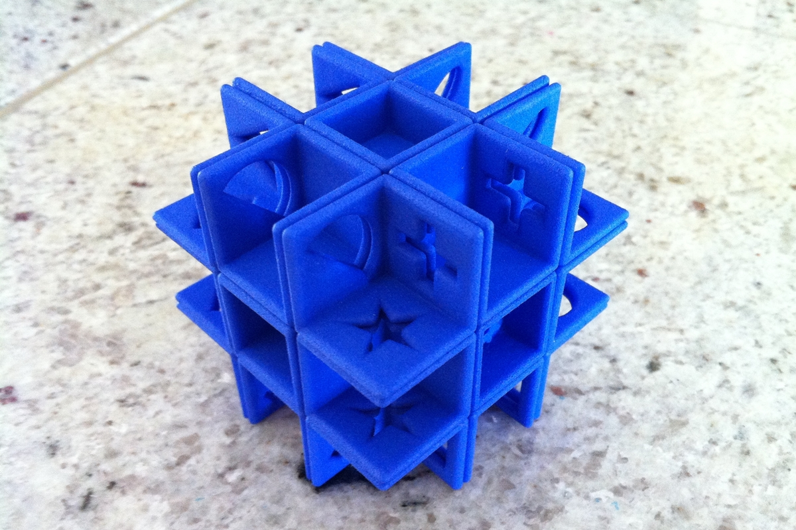
Shapes Puzzle: A 3x3x3 Rubik's cube which is solved by lining up shapes cut through each edge instead of matching colours on each face. The puzzle provides a unique challenge with some special cases that don't occur on a normal Rubik's cube.'>
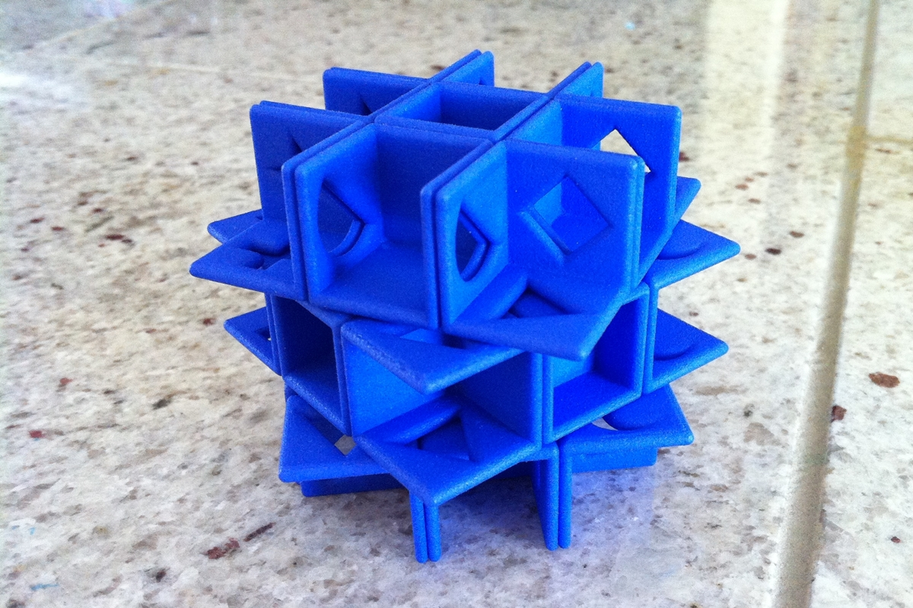
Shapes Puzzle: A 3x3x3 Rubik's cube which is solved by lining up shapes cut through each edge instead of matching colours on each face. The puzzle provides a unique challenge with some special cases that don't occur on a normal Rubik's cube.'>
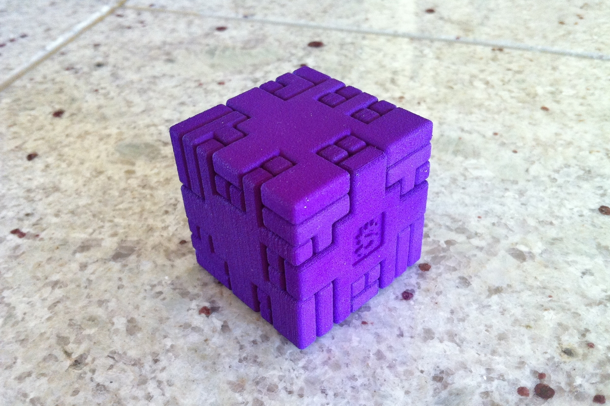
Twisty Burr: A combination between a "twisty puzzle" (or combination puzzle) and a burr puzzle. The internal 2x2x2 cube can only be solved using the surrounding burr puzzle as a guide.'>
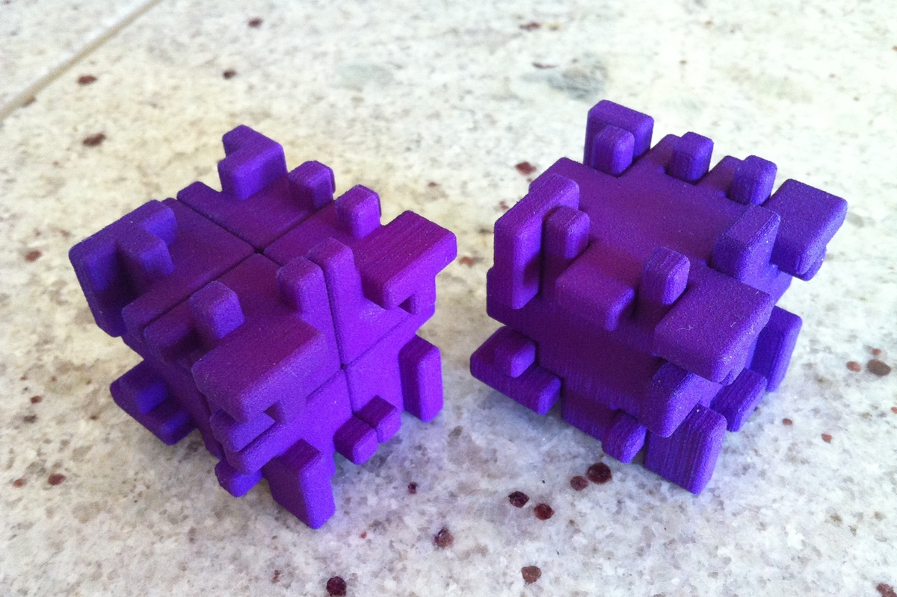
Twisty Burr: The solved 2x2x2 and burr puzzles separated.'>
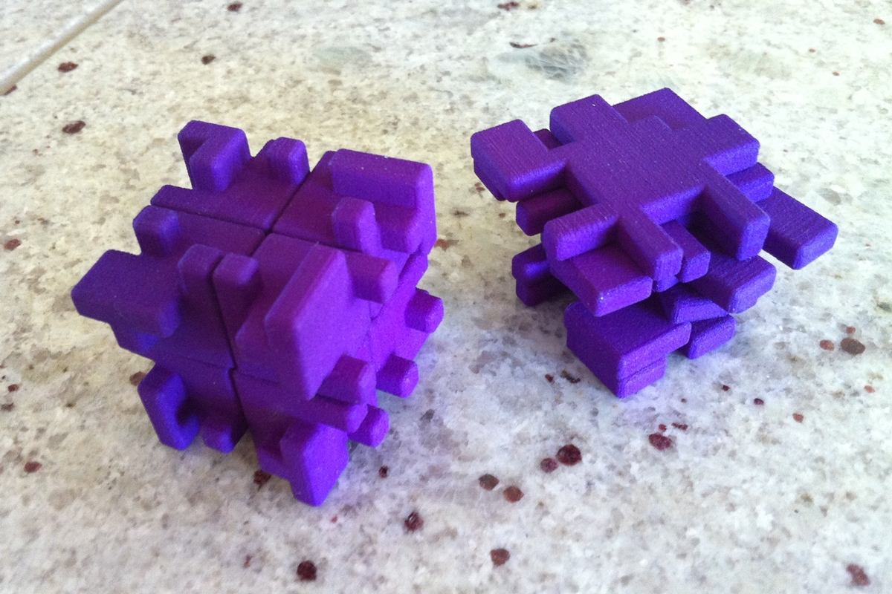
Twisty Burr: Both puzzles scrambled.'>
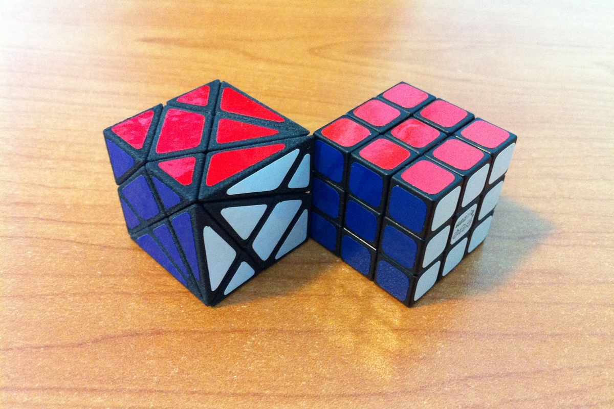
Mini Axis Cube: A shape modification of a 3x3x3 Rubik's cube. This puzzle is only 30mm across each edge!'>
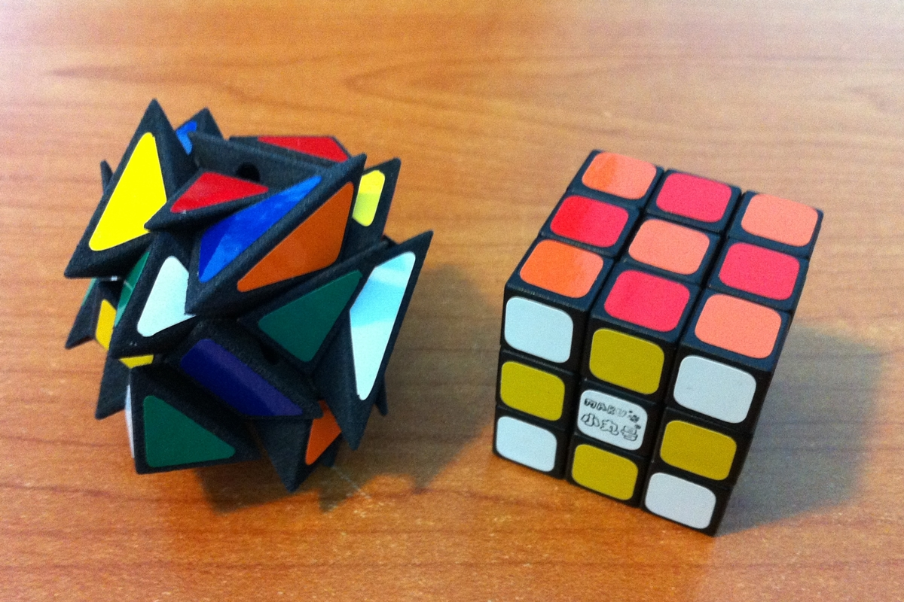
Mini Axis Cube: Scambled.'>
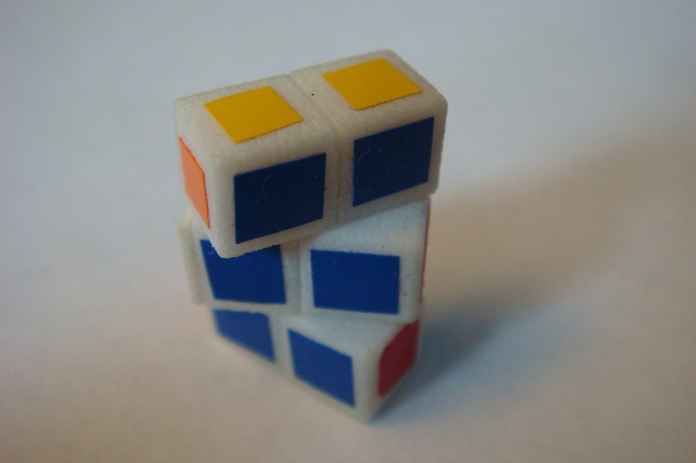
Micro 1x2x3: The smallest 1x2x3 cuboid puzzle ever made, measuring only 18mm across the longest axis.'>
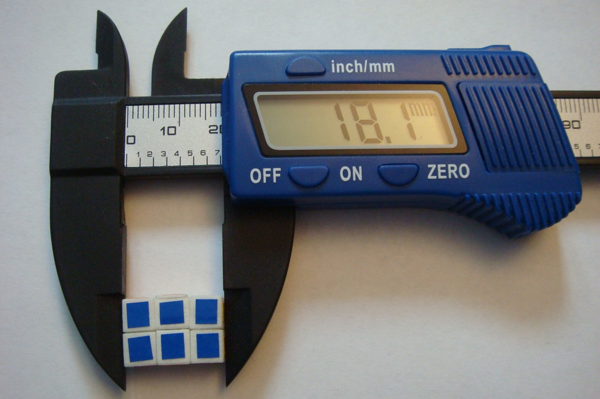
Micro 1x2x3: The smallest 1x2x3 cuboid puzzle ever made, measuring only 18mm across the longest edge.'>
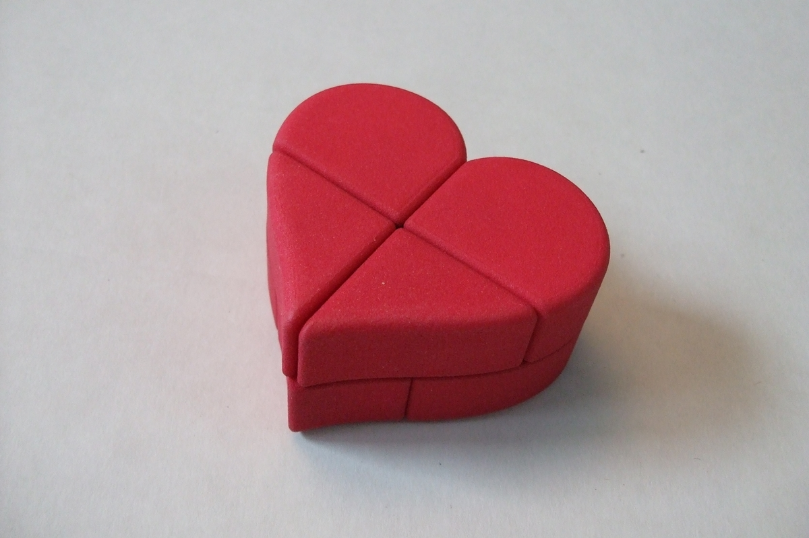
Heart 2x2x2: A 2x2x2 puzzle in the shape of a heart. One layer is rotated 45°, so each piece is unique, making it easier to solve.'>
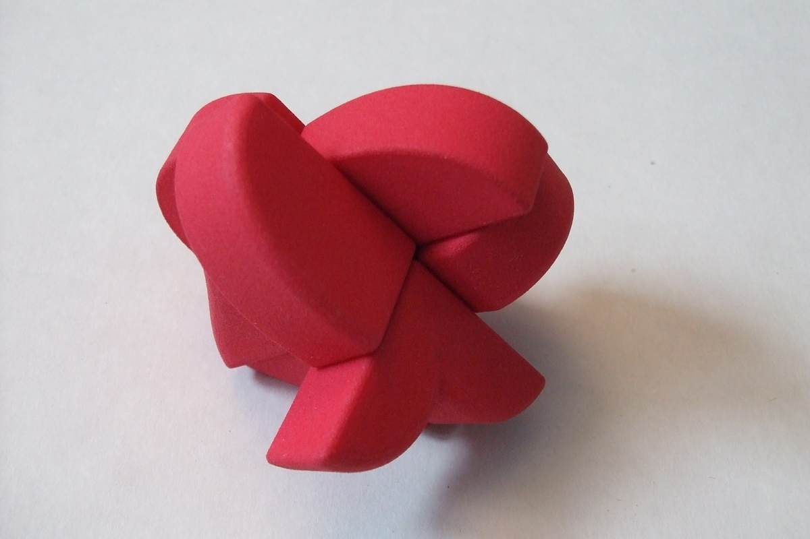
Heart 2x2x2: Scrambled.'>